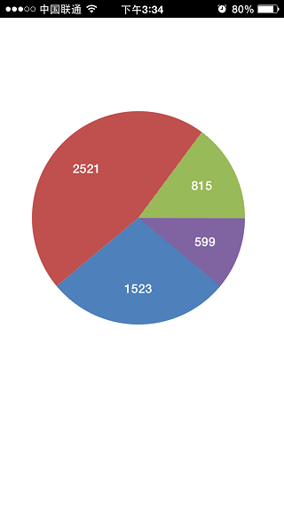
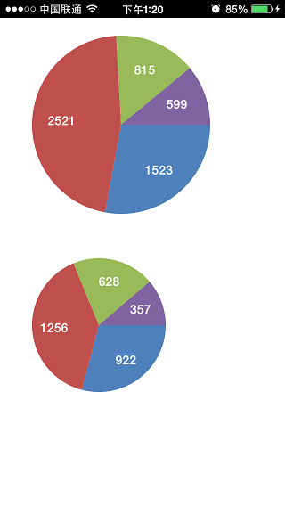
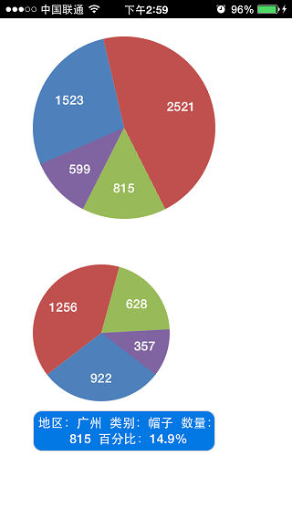
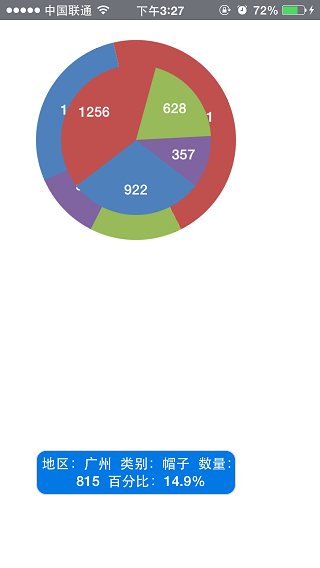
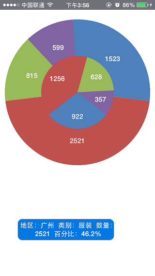

饼状图
1 实现效果
如下图所示：

数据项如下图所示：

2 实现思路
产品提供的饼图定制控件为div容器中包含多个<input type="cake" value="10" percent="10%" />组成。
由于此需求为两个饼图合并，所以我们先简单实现只有一组数据的饼图，然后尝试将两个饼图拼接。
由于lua的库函数中没有四舍五入的方法所以我们自己实现一个。
--[[
@doc:实现四舍五入
@param：
num:数据
n:保留几位小数
--]]
function round(num,n)
local int_num,frac_num = math.modf(num);
local new_num;
if n > 0 then
local frac_str = tostring(frac_num);
local frar_str_n_1 = string.sub(frac_str,1,n+2);
print(frar_str_n_1);
local frar_str_n = string.sub(frac_str,n+3,n+3);
print(frar_str_n);
frac_num = tonumber(frar_str_n);
frac_num = frac_num + 5;
local add_str = 0;
if n > 1 then
add_str = string.rep("0", n -1);
add_str = "0." .. add_str .. "1";
end;
if frac_num >= 10 then
new_num = int_num + tonumber(frar_str_n_1) + tonumber(add_str);
else
new_num = int_num + tonumber(frar_str_n_1);
end;
else
new_num = num;
end;
return new_num
end;
计算百分比代码：
--[[
@doc:计算百分比
@param:
num_tab:数据列表
--]]
function get_percent(num_tab)
local sum = 0;
for key,value in ipairs(num_tab) do
sum = sum + value;
end;
local percent_tab ={} ;
for key,value in ipairs(num_tab) do
local percent = value / sum;
print(percent);
table.insert(percent_tab,round(percent,3));
end;
return percent_tab;
end;
调用此方法结算百分比：
local percent_tab = get_percent({1523,2521,815,599});
for key,value in ipairs(percent_tab) do
print(value);
end;
得到结果(保留三位小数)：
0.279
0.462
0.149
0.11
2.1 实现一个饼图
根据上面算出的百分比，暂时先得一个饼图。
实现代码为：
报文：
<div class="div_cake" border="0">
<input type="cake" name="gz_data" value="1523" percent="0.279" class="cake1" onclick="detail('1','1523','0.279')"></input>
<input type="cake" name="gz_data" value="2521" percent="0.462" class="cake2" onclick="detail('2','2521','0.462')" ></input>
<input type="cake" name="gz_data" value="815" percent="0.149" class="cake3" onclick="detail('3','815','0.149')" ></input>
<input type="cake" name="gz_data" value="599" percent="0.11" class="cake4" onclick="detail('4','599','0.11')" ></input>
</div>
样式：
.div_cake{top:105px;left:36px;width:241px;height:241px;}
.cake1{color:#ffffff;background-color:#4E81BB;font-size:14px;font-weight:bold;}
.cake2{color:#ffffff;background-color:#C0504E;font-size:14px;font-weight:bold;}
.cake3{color:#FFFFFF;background-color:#98BA58;font-size:14px;font-weight:bold;}
.cake4{color:#FFFFFF;background-color:#8064A1;font-size:14px;font-weight:bold;}
得到效果图为： 
由于数据为计算出来的，我们试试用脚本初始化一下这个饼图。
使用局部刷新的方法来实现初始化。
获得饼图报文的方法为：
--[[
@doc:根据数据计算百分比并得到饼图报文
@param:
data_tab:数据列表
class_name:饼图样式
cake_name:饼图名称
onclick:点击事件
--]]
local function cake_page(data_tab,class_name,cake_name,onclick)
local data_num = table.getn(data_tab);
local per_tab = get_percent(data_tab);
local cake_page = "";
for i = 1 , data_num do
cake_page = cake_page .. [[
<input type="cake" name="]]..cake_name..[[" value="]]..data_tab[i]..[[" percent="]]..per_tab[i]..[[" class="]]..class_name..i..[[" onclick="]]..onclick..[[(']]..i..[[',']]..data_tab[i]..[[',']]..per_tab[i]..[[')"/>]];
end;
cake_page = [[<div class="div_cake" name="div_cake" border="0">]]..cake_page..[[</div>]]
return cake_page;
end;
--[[
@doc:初始化
--]]
local function initial()
local data_tab = {1523,2521,815,599};
local div_cake_page = cake_page(data_tab,"cake","gz_data","detail");
local div_cake_ctrl = document:getElementsByName("div_content");
local div_cake_str = [[
<div border="0" name="div_content">]]..div_cake_page..[[</div>]]
div_cake_ctrl[1]:setInnerHTML(div_cake_str);
end;
initial();
修改界面报文为:
<body class='body'>
<div border="0" name="div_content">
</div>
</body>
运行得到预期效果。
这样我们就得到了一个饼图的报文代码。下面我们尝试着将两个饼图放在一个div中，位置为一上一下。
饼图的大小由第一个cake的样式控制，所以修改样式并且增加一个饼图的样式。
.body {width:320px;height:460px;background-color:#FFFFFF;}
.div_cake_gz{top:20px;left:36px;}
.div_cake_wh{top:270px;left:36px;}
.cake_gz1{width:200px;height:200px;color:#ffffff;background-color:#4E81BB;font-size:14px;font-weight:bold;}
.cake_gz2{color:#ffffff;background-color:#C0504E;font-size:14px;font-weight:bold;}
.cake_gz3{color:#FFFFFF;background-color:#98BA58;font-size:14px;font-weight:bold;}
.cake_gz4{color:#FFFFFF;background-color:#8064A1;font-size:14px;font-weight:bold;}
.cake_wh1{width:150px;height:150px;color:#ffffff;background-color:#4E81BB;font-size:14px;font-weight:bold;}
.cake_wh2{color:#ffffff;background-color:#C0504E;font-size:14px;font-weight:bold;}
.cake_wh3{color:#FFFFFF;background-color:#98BA58;font-size:14px;font-weight:bold;}
.cake_wh4{color:#FFFFFF;background-color:#8064A1;font-size:14px;font-weight:bold;}
修改初始化为生成两个饼图。
local function initial()
local data_tab_gz = {1523,2521,815,599};
local data_tab_wh = {922,1256,628,357};
local div_cake_page_gz = cake_page(data_tab_gz,"cake_gz","gz_data","detail_gz","div_cake_gz");
local div_cake_page_wh = cake_page(data_tab_wh,"cake_wh","wh_data","detail_wh","div_cake_wh");
local div_cake_ctrl = document:getElementsByName("div_content");
local div_cake_str = [[
<div border="0" name="div_content">]]..div_cake_page_gz..div_cake_page_wh..[[</div>]]
div_cake_ctrl[1]:setInnerHTML(div_cake_str);
end;
initial();
此时运行效果图为：

下面我们先实现两个饼图的点击事件。
点击事件的脚本为：
--[[
@doc:点击饼图某部分更新描述
@params：
area,type,data,per: 地区编号，类别编号，数量，占比
--]]
function detail(area,type_num,data_num,per)
local per_str = (per * 100) .. "%";
local area_tab = {"广州","武汉"};
local type_tab = {"运动鞋","服装","帽子","袜子"};
local detail_str = "地区：".. area_tab[tonumber(area)] .." 类别：" .. type_tab[tonumber(type_num)] .. " 数量：" .. data_num .. " 百分比：" .. per_str;
local label_detail_ctrl = document:getElementsByName("label_detail");
label_detail_ctrl[1]:setPropertyByName("text",detail_str);
end;
报文中增加一个div用于显示描述。
<div border="1" class="div_detail_wh" name="div_detail_wh">
<label name="label_detail"></label>
</div>
运行效果如下图：

基本需要实现的都实现了，现在就剩下将两个饼图合并到一起的工作了，将第二个饼图的top值修改一下看看效果。
根据饼图的中心点坐标，修改第二个饼图的样式为：
.div_cake_wh{top:45px;left:61px;}
运行效果如下图：

从运行效果图上看这两个饼图的合并不太符合预期，而且大图的数据看不到，我们将这两个饼图的样式调整一下。
将大图变大，小图变小，修改样式为：
.body {width:320px;height:460px;background-color:#FFFFFF;}
.div_cake_gz{top:20px;left:10px;}
.div_cake_wh{top:95px;left:85px;}
.div_detail_wh{top:430px;left:36px;width:200px;height:45px;background-color: #0278E4;color:#ffffff;font-size:14px;}
.label{width:200px; text-align: center; top:5px; left:5px;}
.cake_gz1{width:300px;height:300px;color:#ffffff;background-color:#4E81BB;font-size:14px;font-weight:bold;}
.cake_gz2{color:#ffffff;background-color:#C0504E;font-size:14px;font-weight:bold;}
.cake_gz3{color:#FFFFFF;background-color:#98BA58;font-size:14px;font-weight:bold;}
.cake_gz4{color:#FFFFFF;background-color:#8064A1;font-size:14px;font-weight:bold;}
.cake_wh1{width:150px;height:150px;color:#ffffff;background-color:#4E81BB;font-size:14px;font-weight:bold;}
.cake_wh2{color:#ffffff;background-color:#C0504E;font-size:14px;font-weight:bold;}
.cake_wh3{color:#FFFFFF;background-color:#98BA58;font-size:14px;font-weight:bold;}
.cake_wh4{color:#FFFFFF;background-color:#8064A1;font-size:14px;font-weight:bold;}
运行效果图为:

从运行效果看和预期还有是有些差别，主要是饼图各个饼块之间没有一点分隔线，两个饼图也没有外圈线，效果上看着不好，期待在客户端将图表控件优化后能做出更好的效果。